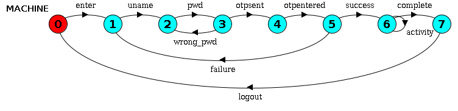
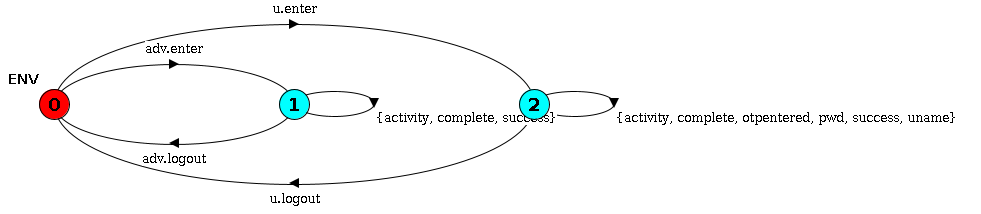

<2024-08-15 বৃহঃ>
We first define a simple login system using LTS notation. Following is a typical login system design.
MACHINE = ( enter -> P0 ),
P0 = ( uname -> P1 ),
P1 = ( pwd -> P2 ),
P2 = ( otpsent -> P3 | wrong_pwd -> P1 ),
P3 = ( otpentered -> P4 ),
P4 = ( success -> P5 | failure -> P0 ),
P5 = ( activity -> P5 | complete -> P6 ),
P6 = ( logout -> MACHINE ).

Now let us look at users - the users can get up at any time during their interaction with the computer. It can result from network unavailability or from user ignroance from rural communities (Research suggest that the latter is very common). So we plot a similar definition for environment under which login system is used.
ENV = (u.enter -> USER | adv.enter -> ADVERSARY),
USER = ( uname -> USER | pwd -> USER | otpentered -> USER | success -> USER | activity -> USER | complete -> USER | u.logout -> ENV ),
ADVERSARY = ( success -> ADVERSARY | activity -> ADVERSARY | complete -> ADVERSARY | adv.logout -> ENV ).

Now we define a safety property - the person who confirms OTP is the only that person can do activity in that account. We take inspiration from voting example to write down this safety property.
const NoBody = 0
const User = 1
const Adversary = 2
range WHO = NoBody..Adversary
P = ACTIVITY[NoBody][NoBody][NoBody],
ACTIVITY[in:WHO][otp:WHO][act:WHO] = (
u.enter -> ACTIVITY[User][otp][act] | adv.enter -> ACTIVITY[Adversary][otp][act]
| success -> ACTIVITY[in][otp][in]
| activity -> ACTIVITY[in][in][act]
| when (otp == act) complete -> ACTIVITY[in][NoBody][NoBody]
).
Later we will also explore some simpler safety property like the following. We introduce process to monitor that the sequence of events follows the rule: If a user logs in (success), then that user must perform the activity before logging out (complete).
SAFE = (login -> monitor_login),
monitor_login = (activity -> monitor_activity),
monitor_activity = (complete -> SAFE | activity -> monitor_activity),
monitor_login = (failure -> SAFE).
Finally, we use Fortis to generate redesigns for it. But for it, we have to define the observable and controllable events and their corresponding costs (optional). Let us use ChatGPT4o to help us with that.
{
"sys": ["sys.lts"],
"env": [],
"dev": ["env.lts"],
"safety": ["p.lts"],
"method": "supervisory",
"options": {
"progress": ["complete"],
"preferredMap": {
"3": [ ["enter", "uname", "pwd", "otpsent", "otpentered", "success", "activity", "complete"] ]
},
"controllableMap": {
"1": ["uname", "pwd", "otpsent", "otpentered", "success", "activity", "complete", "logout"],
"3": ["u.enter", "u.logout", "adv.enter", "adv.logout"]
},
"observableMap": {
"0": ["uname", "pwd", "otpsent", "otpentered", "success", "activity", "complete", "logout"],
"2": ["u.enter", "u.logout", "adv.enter", "adv.logout"]
},
"algorithm": "Pareto"
}
}
The cost management by ChatGPT4o looks very good. We had to, however, manually adjust the scoring a bit. It should be within 0-3 but chatGPT assigned larger priority for some events. Now let us execute the tool Fortis using the following command.
cd examples/Login
java -jar ../../bin/fortis.jar robustify config-pareto.jsonThe redesigns are many. We show a part of solution 3 below.
This solution can be interpreted in two ways.